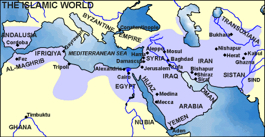

Coin Production
Coin Production

Coin Production
This is an Islamic coin with words in Arabic
Point your cursor at the coin to translate it
TRANSLATION
...There is no God but God ...
ISLAMIC COINS
Early Islamic Coins
After the rise of Islam in Arabia in the 7th century AD, the early Muslims used, adapted and imitated the coinage of the peoples whose lands they had conquered. They inherited two principal monetary systems.
The former Byzantine territories had a gold-based currency, the solidus, and a bronze coinage, the follis. The Sasanians had a coinage based on the silver drachm. The Muslims adapted the names of the coin types: �denarius� became �dinar�, �follis� became �fals� and �drachm� became �dirham�.
Words of Muhammad
In AD 696-7 the coinage underwent a reform which ended the use of figural representation, particularly on gold and silver coins. From then on inscriptions became dominant.
These stated the essence of the Islamic message: the belief in the one God, Allah, and that Muhammad was his messenger. These are phrases known as the shahada, or �profession of faith�.

Standardised coins
The shahada, along with reference to the mint, date and later to the ruler, provided for several centuries the standard for Islamic coins struck across the empire. This stretched, at its height, from Spain in the west to India in the east.
The main language found on Islamic coins was Arabic which, being associated with the Qur'an, was greatly revered. On coins up to the 13th century the script used was known as Kufic and is characterised by angular letter forms.
ABOVE: Gold dinar, probably from Damascus in Syria, AD 696-7
BMC 186, 19.5 mm